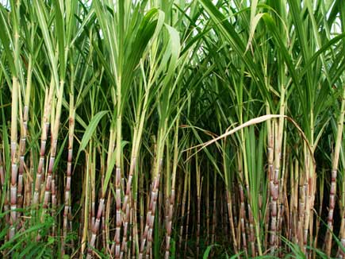

ऊस विषयी माहिती

ऊस
सन २०१२-१३ मध्ये भारतातील ऊस पिकाखालील एकुण क्षेत्राच्या (५०.६३ लाख हे.) १५.८० टक्के क्षेत्र (८.०० लाख हे.)
महाराष्ट्र राज्यात झाले होते. देशातील एकुण ऊस उत्पादनाच्या (३६१० लाख टन) १९.३९ टक्के उत्पादन (७०० लाख टन)
महाराष्ट्र राज्यात होते. राज्याची दर हेक्टरी उत्पादकता (८७.५ टन/हे.) ही राष्ट्रीय उत्पादकतेपेक्षा (६६.१० टन/हे)
जास्त होती. राज्याचा सरासरी साखर उतारा ११.४० टक्के होता. हा राष्ट्रीय सरासरी उता-यापेक्षा (१०.२५ टक्के) जास्त
होता.
लागवडीचा हंगाम
सुरु – १५ डिसेंबर ते १५ फेब्रुवारी,
पुर्वहंगामी – १५ ऑक्टोंबर ते १५ नोंव्हेबर,
आडसाली – १५ जुलै ते १५ ऑगस्ट
असे ऊस लागवडीचे हंगाम ऊस उत्पादकता व साखर उता-याच्या दृष्टीने योग्य आहेत.
जातींची निवड
महाराष्ट्र शासनाने महात्मा फुले कृषि विद्यापीठ, राहुरी अंतर्गत ऊस संशोधन केंद्र पाडेगाव आणि वसंतदादा साखर संस्था
(व्ही.एस.आय) मांजरी, पुणे यांच्या माध्यमातून आतापर्यंत अधिक ऊस उत्पादन आणि चांगला साखर उतारा असणा-या अनेक जाती
प्रसारित केल्या आहेत.
तथापी सध्या को. ८६०३२ (निरा), को ९४०१२ (फुले सावित्री), को.एम.०२६५ (फुले २६५), को. ९२००५
आणि को.सी ६७१ या मोठ्या प्रमाणात लागवडीखाली असणा-या जातींची प्रामुख्याने निवड करावी.
जमिन आणि लागवड
ऊसासाठी मध्यम ते भारी जमिनीची निवड करावी. उभी आडवी नांगरट, कुळवणी इ.मशागत करुन जमीन चांगली भुसभुसीत करावी.
लागवड
उसाची लागवड करताना मध्यम जमिनीसाठी दोन स-यातील अंतर १०० ते १२० सें.मी व भारी जमिनीसाठी १२० ते १५० सें.मी. ठेवून
सरीचा लांबी उतारानुसार २० ते ४० मीटर ठेवावी.
पट्टा पध्दतीने लागवड करावयाची असल्यास मध्यम जमिनीसाठी ७५-१५०
सें.मी. व भारी जमिनीसाठी ९०-१८० सें.मी पध्दतीचा अवलंब करावा. ऊसाची लागवड एक डोळा किंवा दोन डोळ्यांची टिपरी
वापरून करावी.
एक डोळा पध्दतीने लागण करावयाची असल्यास दोन डोळ्यातील अंतर ३०. सें.मी ठेवावे. शक्यतो कोरड्या
पध्दतीने लागण करावी. डोळा वरच्या बाजूस ठेवून मातीने झाकून पाणी द्यावे किंवा ऊस लागणीपूर्वी सरीत हलकेसे पाणी
सोडावे व वाफशावर कोली घेऊन लागण करावी.
दोन डोळ्यांची टिपरी वापरायची असल्यास दोन टिप-यांमधील अंतर १५ ते २०
सें.मी. ठेवावी. यासाठी ओल्या पध्दतीने लागण केली तरी चालेल. मात्र टिपरी खोल दाबली जाणार नाहीत याची काळजी घ्यावी.
लागणीसाठी भारी जमिनीसाठी एकरी १०,००० व मध्यम जमिनीसाठी १२,००० टिपरी लागतात.
एक डोळा रोपांपासून ऊस लागवड
संशोधन केंद्रे आणि काही खाजगी नर्सरीमधून आता ऊसाची रोपे विक्रीस उपलब्ध आहेत.
प्लॅस्टिक ट्रेमध्ये कोकोपीट वापरून
तयार केलेली ऊस रोपे साधारण ३० ते ४० दिवसांची झाल्यावर लागवडीयोग्य होतात. यासाठी ९ ते १० महिने वयाचे चांगल्या
बेणेमळ्यातील शुध्द, निरोगी बेणे रोपे तयार करण्यासाठी वापरावे.
ऊस बेणे लागणीपूर्वी १०० लिटर पाणी अधिक ३००
मि.ली.मेलॅथिऑन अधिक १०० ग्रॅम बाविस्टीनची १० मिनीटांसाठी बेणे प्रक्रिया केल्यानंतर जिवाणूंची बीज प्रक्रिया
करावी. यामुळे बुरशीजन्यरोग व खवले किडीचा बंदोबस्त होतो. अॅसेटोबॅक्टर आणि स्फुरद विरघळविणारे जीवाणू खतांचे प्रमाण
अनुक्रमे १० किलो आणि १.२५ किलो प्रति १०० लिटर पाण्यात मिसळून केलेल्या द्रावणात उसाच्या टिप-या ३० मिनीटे बुडवून
लागण करावी. त्यामुळे नत्राची ५० टक्के बचत होते.
एक महिन्याच्या रोपांना सुक्ष्म अन्नद्रव्यांची फवारणी करावी उसाची
रोपे ३०-४० दिवस कोकोपीटमध्ये वाढविलेली असतात. त्यामुळे आपणास शुध्द निरोगी ऊस रोपे निवडून घेता येतात.
निकृष्ट
रोपे लागवडीस न वापरल्याने शेतात सर्वत्र एकसारखे उसाचे पीक वाढते, एकरी ऊसांची संख्या ४० ते ५० हजार मिळते. ऊस
लोळण्याचे प्रमाण कमी राहून उसाचे सरासरी वजन २ ते ३ किलोपर्यत मिळते. रोप लागण पध्दतीत नेहमीच्या लागणीस ३०-४०
दिवसांपर्यंत जोपासण्यासाठी लागणारे पाणी, तणनियंत्रण, खते, देखरेख यामध्ये बचत होते.
पावसाने ओढ दिल्यामुळे वेळेवर
लागण करता येत नाही. अशा वेळी पाऊस १ ते १.५ महिना लांबला तरी उसाची रोपे लागण करुन हंगाम साधता येतो. काही वेळेस
अगोदरचे पीक काढणीस उशीर होतो किंवा जास्त पावसाने वापसा नसल्याने वेळेवर लागण करता येत नाही. अशा वेळेस ऊस रोपे
लागण करुन वेळेवर हंगाम साधता येतो.
ऊसाच्या दोन ओळीतील अंतर व रोपातील अंतर यावरुन एकरी लागणा-या ऊस रोपांची संख्या
काढता येते.
आंतरपिके
आडसाली उसामध्ये भुईमूग, चवळी, सोयाबीन, भाजीपाला, तर पूर्वहंगामी उसामध्ये बटाटा, कांदा, लसूण, पानकोबी, फुलकोबी,
पालेभाज्या, हरभरा, वाटाणा आणि सुरु ऊसामध्ये उन्हाळी भुईमूग, पानकोबी, फुलकोबी, नवलकोल, मेथी, कोथिंबीर, गवार,
भेंडी इ.पिके आंतरपिक म्हणून घेता येतात.
उस बेणे आणि प्रक्रिया
बेणे मळ्यात वाढविलेले १० ते ११ महिने वयाचे निरोगी, रसरशीत आणि अनुवंशिकदृष्टया शुध्द बेणे वापरल्यास ऊस उत्पादनात
१५ ते २० टक्के वाढ होते. उस बेणे लागवणीपूर्वी १०० लिटर पाणी अधिक ३०० मि.ली. मेलॅथिऑन अधिक १०० ग्रॅम बाविस्टीनची
१० मिनीटांसाठी बेणे प्रक्रिया केल्यानंतर जिवाणूंची बीज प्रक्रिया करावी. यामुळे बुरशीजन्य रोग आणि खवले किडीचा
बंदोबस्त होतो.
अॅसेटोबॅक्टर आणि स्फुरद विरघळणारे जीवाणू खतांचे प्रमाण अनुक्रमे १० किलो आणि १.२५ किलो प्रति १०० लिटर पाण्यात
मिसळून केलेल्या द्रावणात उसाच्या टिप-या ३० मिनीटे बुडवून लागण करावी. यामुळे नत्राखतामध्ये ५० टक्के ची तर स्फुरद
खतामध्ये २५ टक्के बचत करता येते.
एकात्मिक खत व्यवस्थापन
रासायनिक खतांचा असंतुलित वापर झाल्यामुळे जमिनीची सुपीकता व उत्पादकता कमी झाली आहे. यासाठी सेंद्रिय, जैविक आणि
रासायनिक अशी एकात्मिक अन्नद्रव्य व्यवस्थापनाची गरज आहे.
सेंद्रिय खते
सुरु, पूर्वहंगामी व आडसाली ऊसासाठी प्रति हेक्टरी अनुक्रमे २० (४० गाड्या), २५ (५० गाड्या) व ३० (६० गाड्या) टन
शेणखत अथवा पाचटाचे कंपोष्ट खत प्रती हेक्टरी ७.५ टन (१५ गाड्या), प्रेसमड केक प्रती हेक्टरी ६ टन (१२ गाड्या) आणि
गांडूळ खत प्रती हेक्टरी ५ टन ( १० गाड्या) ऊस लागवडीपूर्वी दुस-या नांगरटीच्या वेळी अर्धी मात्रा व उरलेली अर्धी
मात्रा सरी सोडण्यापूर्वी द्यावी. शेणखत अथवा कंपोष्ट खताची उपलब्धता नसल्यास ताग, धैंचा यासारख्या हिरवळीच्या
पिकांचा सेंद्रिय खत म्हणून वापर करावा.
ठिंबक सिंचनातून नत्रयुक्त खते
ठिंबक सिंचनातून देण्यासाठी युरिया हे संपूर्ण पाण्यात विरघळणारे उत्तम नत्रयुक्त खत आहे. लागणीपासून मोठ्या
बांधणीपर्यत दर आठवड्याच्या अंतराने समान २० हप्त्यात किंवा दर पंधरा दिवसाच्या अंतराने समान १० हप्त्यांत नत्रखताची
मात्रा विभागून दिल्यास उसाच्या उत्पादनात भरीव वाढ होते.
पांरपारिक स्फुरदयुक्त खते नेहमीप्रमाणे दोन समान हप्त्यात
ऊस लागणीचे वेळी व मोठ्या बांधणीचे वेळी जमिनीतून द्यावीत.